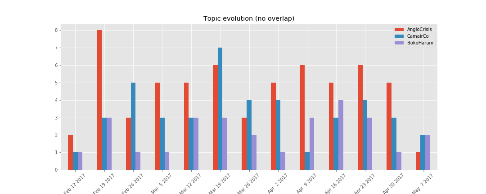

Web data mining is a major component in the data science activities landscape. With its use, we can track brand mentions from social media statuses, policy sentiment on forums and "hot" topics from political blog posts.
In this article, we'll ding into the posts from the politics's rubric of the site Journal Du Cameroun (JDC) to find what are the topics developed there. The scraping was done on May the 10th 2017 and the dataset includes 136 articles between February 17, 2017 and May 9, 2017.
Disclamer: At the time of the publication of this article, the author is not associated or linked in any order with the site journalducameroun.com. Nor does he have a preference for that editorial line in particular. The site was just used for the purpose of illustration.
The full code of this article is available on github.
Data Collection
In this article, as mentioned earlier, we'll use the data from JDC
and before that, we need to fecth the data (text content) from the articles on the site, and
the act of doing so is call scraping. Web scraping can be complicated because you need to take
care of a lot of things (caching, redirection, timeout, etc...) and if you're in the
position that you just need the data to get things done, it can be very frustrating.
Hopefully, there is scrapy, a Python and
one of the most used sraping framework out there. One you need to do is to tell scrapy how to
process the received pages, point it to a starting url and it will do the "dirty" work for you.
The installation of scrapy is really simple.
$ pip install scrapy
Or if you use the conda environment which I recommend.
$ conda install -c conda-forge scrapy
Once installed, you create a new project, move to the project folder and generate your spider.
$ scrapy startproject jdc $ cd jdc/ $ scrapy genspider polblog
Inside the spiders folder, will be a script named polblog.py that
contains something like this.
import scrapy class PolblogSpider(scrapy.Spider): name = "polblog" start_urls = ['http://journalducameroun.com/en/category/politics/'] def parse(self, response): for href in response.xpath("//ul[@class='list-post list-full ']//article/a/@href").extract(): url = response.urljoin(href) yield scrapy.Request(url, callback=self.parse_post) next_page = response.xpath("//a[@rel='next']/@href").extract_first() if next_page is not None: url = response.urljoin(next_page) yield scrapy.Request(url, callback=self.parse) def parse_post(self, response): post = scrapy.Item() text = " ".join(response.xpath("//article[@class='post-full']//div[@class='post-content']//p/text()").extract()) info = response.xpath("//article[@class='post-full']//p/text()").extract_first() h = re.search("\d+h\d+", info).group(0).replace("h", ":") d,m,y = re.search("\d+.\d+.\d+", info).group(0).split(".") date = y + "-" + m + "-" + d + " " + h post["url"] = response.url post["title"] = response.xpath("//article[@class='post-full']/h1/text()").extract_first() post["text"] = " ".join(map(str.strip, text.split(" "))) post["author"] = " ".join(re.findall("\w+", info.split("by")[1])) post["published"] = date yield post
The code above is very simple. It tells scrapy to go to the politics's category
of JDC and for each post listed there, fecth the content of
the post and extract its title, publish date, author and text content.
$ scrapy crawl polblog -o data/jdc-raw.en.json
Preprocessing
Before doing anaything with the collected blog posts, we need to break each post to a collection of words or chunks. It's called tokenization. During this process, we remove from the text, spaces, punctuations, stop words and other things we jugde irrelevant because they don't convey enough information to discriminate between topics in documents. For this, we will use a well established library for text analytics, spacy. The installation is as simple as the installation of scrapy. And after the installtion, we just import the library into our working environment.
import spacy
After importing the library, we load the english lexicon.
nlp = spacy.load("en")
We now stream trought the texts and transform each to a set of tokens and save them to a file. See the
transform_doc in the repository.
def transform_texts(texts, out_file): out = open(out_file, "w") for text in texts: doc = nlp(text) line = ", ".join(transform_doc(doc)) + "\n" out.write(line) out.close() texts = [p["text"] for p in json.load(open("data/jdc-raw.en.json"))] transform_texts(texts, "data/jdc-tokens.en.text")
Now that we have our posts as tokens, we're good to go.
Modeling
One of the widely use model for topic discovery is the Latent Dirichlet Allocation or LDA for short. I'm not going to talk about that in this post. Just to point that, there is a cool library in Python dedicated for it, named gensim. There is also a module in scikit-learn (another popular Python's library for Machine Learning) for performning LDA. The code is pretty simple.
from gensim.corpora import TextCorpus, MmCorpus from gensim.models import LdaModel class Corpus(TextCorpus): def get_texts(self): for line in open(self.input): yield line.strip().split(", ") corpus = Corpus("data/jdc-tokens.en.txt") lda = LdaModel( corpus, num_topics=3, id2word=corpus.dictionary, minimum_probability=0.1, chunksize=5, random_state=42, )
Now that we've trained a model, we can save it for later use.
lda.save("data/jdc-lda-model") MmCorpus.serialize("data/jdc-corpus.mm", corpus)
Along side the LDA for topic modeling, there is also another common used model, the Poisson Matrix Factorization (PMF) which belongs to the matix factorization techniques family with probabilistic reasoning behind.
Results
We trained our model and save it to disk. We can now inspect its ouput.
from gensim.corpora import Mmcorpus from gensim.models import LdaModel lda = LdaModel.load("data/jdc-lda-model") corpus = MmCorpus("data/jdc-corpus.mm")
We show the topics with the ten more prominent words.
show_topics(lda)
| Topic 1 | Topic 2 | Topic 3 |
|---|---|---|
| government | camair-co | countries |
| people | company | girls |
| teachers | new board chair | nigeria |
| release | time | refugees |
| commission | boeing business plan | borders |
| presidency | transport | country |
| minister | observers | boko haram |
| statement | presidential decree | terrorists |
| president | summons | order |
| consortium | meeting | sect |
We can see that the first topic is about the crisis in North West and South West regions ("the anglophone crisis"). The second is about the national airline compagny, Camair Coorporation (CamairCo) that have been struggle to take off since its creation and have been replacing board members and directors without much of a success. The third topic seems to be with terrorism and Boko Haram sect. We can then go ahead and label our topics.
labels = ["AngloCrisis", "CamairCo", "BokoHaram"] show_topics(lda, labels=labels)
| AngloCrisis | CamairCo | BokoHaram |
|---|---|---|
| government | camair-co | countries |
| people | company | girls |
| teachers | new board chair | nigeria |
| release | time | refugees |
| commission | boeing business plan | borders |
| presidency | transport | country |
| minister | observers | boko haram |
| statement | presidential decree | terrorists |
| president | summons | order |
| consortium | meeting | sect |
One way to visualize the topics above is to plot the number of documents per topic per time to spot the evolution of each topic. We will use the time lag of a week to sum up the counts.
topic = topic_by_post(lda, corpus, labels=labels) weekly = topic.resample("W", closed="left", label="left").sum() plot_topic_evolution(weekly)
We see that the "anglophone crisis" dominated the news on this site during this timeline.
Conclusion
In this article, we tried to uncover hidden topics in a set of blog posts with a relative success (I think). Of course, the purpose of such analysis is not just to discover topics in a bunch of texts but to do something with the insights gained at the end of the process. This kind of analysis can be use to categorize blogs based on thier editorial line (infered from the topics discovered) and make the result an input to another kind of analysis. It can also be used by government agencies to track the public opinion about a particular policy or subject matter (trought the so called influentials blogs).
Thanks for reading, your comments are welcome.